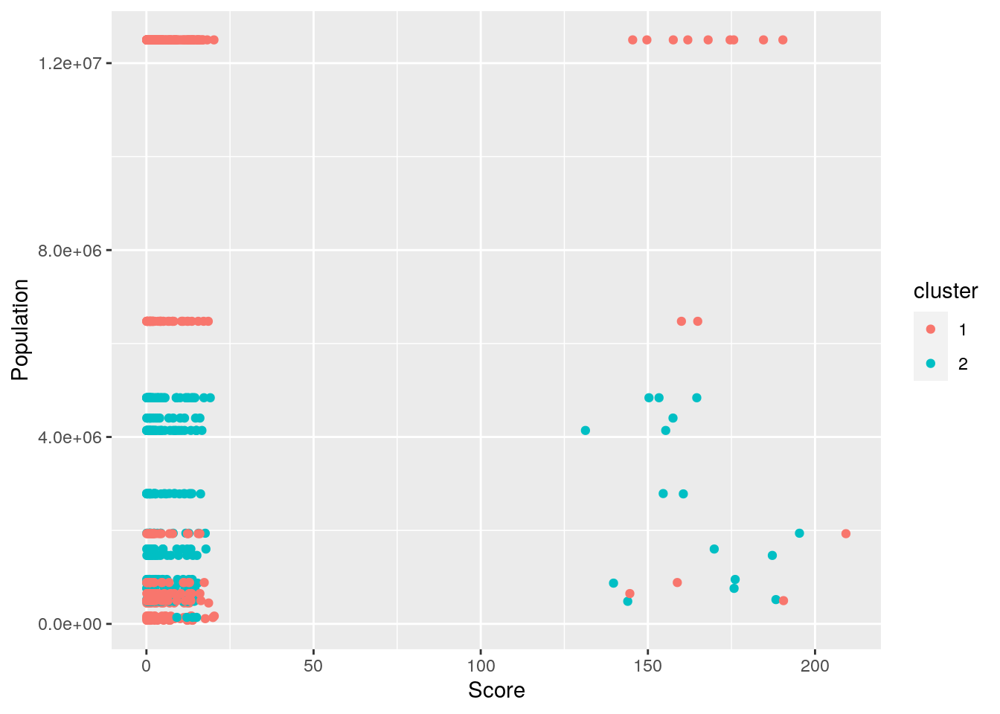

October 18, 2020
About the data
In my project, I have chosen to include two datasets, which I will refer to as cdc and hospital. The cdc dataset contains information from the CDC on mortality in different cities/counties in the US. Some of the variables in the cdc dataset include number of deaths, death rates compared to the national rate, population size of the county, and crude mortality rates.
The hospital dataset is sourced from the medicare website, where the government makes data available regarding patients in different cities/counties. The hospital dataset contains information related to hospital complications and patient deaths. This dataset is particularly concerned with grouping the data by facility, and some of the variables in the hospital dataset include Facility ID, Facility name, Facility address. The hospital dataset also includes information regarding a Score variable, which refers to what is essentially a measure of patient happiness/satisfaction. Hospitals are given a score based on how they perform, with higher scores given to better hospitals.
# load required packages
library(dplyr)
library(tidyverse)
# read in the data
library(readxl)
hospital <- read_excel("comp.xlsx")
cdc <- read_excel("cause.xlsx")
# rename the datasets change cdc variable `county` to
# sentence case
hospital <- hospital %>% rename(County = "County Name")
hospital <- hospital %>% mutate(County = str_to_sentence(County))
# remove the state from the `county` variable in the cdc
# dataset and make it a new variable
cdc <- cdc %>% separate(County, sep = ",", into = c("County",
"State_abbr"))
# get rid of 'County' in each dataset
cdc %>% mutate(County = str_remove(County, " County"))## # A tibble: 3,199 x 10
## State County State_abbr Deaths Population `Crude Rate` `Crude Rate Low…
## <chr> <chr> <chr> <dbl> <dbl> <dbl> <dbl>
## 1 Alab… Autau… " AL" 8957 1031280 868. 850.
## 2 Alab… Baldw… " AL" 34838 3534863 986. 975.
## 3 Alab… Barbo… " AL" 5829 549756 1060. 1033.
## 4 Alab… Bibb " AL" 4636 442548 1048. 1017.
## 5 Alab… Blount " AL" 11313 1113629 1016. 997.
## 6 Alab… Bullo… " AL" 2542 218031 1166. 1121.
## 7 Alab… Butler " AL" 5521 413126 1336. 1301.
## 8 Alab… Calho… " AL" 27386 2303483 1189. 1175.
## 9 Alab… Chamb… " AL" 9203 696260 1322. 1295.
## 10 Alab… Chero… " AL" 6173 506976 1218. 1187.
## # … with 3,189 more rows, and 3 more variables: `Crude Rate Upper 95%
## # Confidence Interval` <dbl>, `Crude Rate Standard Error` <dbl>, `% of Total
## # Deaths` <dbl># join the two datasets based on the county variable
join <- inner_join(hospital, cdc, by = "County")I considered going with a full join so that I would retain all the original data, but I ended up doing an inner join, as it would make it easier to work with the data because I wouldn't have to deal with as many NAs(unmatched rows would be dropped). I also found inner join to be fitting here because I am comparing across datasets, so it is helpful to only include counties where data is available from each dataset. I found the full/inner join approach superior to a right or left join because neither dataset was particularly more interesting or important to keep intact, and I am mostly interested in the intersection of both datasets; I am not particularly more interested in one than the other.
My ID variable for the join was county. I reformatted the county variables in the original datasets so that they were compatible.
In the hospital dataset, there are 91152 observations of 18 variables. In the cdc dataset, there are 3199 observations of 9 variables. In the combined dataset, there are 997 observations of 27 variables.
The values from the original dataset that were dropped in the creation of the combined dataset are values for which data from that County was only present in one of the datasets, and not both. So, because the cdc dataset is small in number of observations compared to the hospital dataset, the brevity of the cdc dataset is likely the cause of the relatively small number of observations (relative to the size of the hospital dataset) in the joined dataset.
Using all 6 core dplyr functions
# see how many rows are from VA (Using filter)
join %>% filter(State.x == "VA")## # A tibble: 629 x 27
## `Facility ID` `Facility Name` Address City State.x `ZIP Code` County
## <dbl> <chr> <chr> <chr> <chr> <dbl> <chr>
## 1 490001 NORTON COMMUNI… 100 1… NORT… VA 24273 Norto…
## 2 490001 NORTON COMMUNI… 100 1… NORT… VA 24273 Norto…
## 3 490001 NORTON COMMUNI… 100 1… NORT… VA 24273 Norto…
## 4 490001 NORTON COMMUNI… 100 1… NORT… VA 24273 Norto…
## 5 490001 NORTON COMMUNI… 100 1… NORT… VA 24273 Norto…
## 6 490001 NORTON COMMUNI… 100 1… NORT… VA 24273 Norto…
## 7 490001 NORTON COMMUNI… 100 1… NORT… VA 24273 Norto…
## 8 490001 NORTON COMMUNI… 100 1… NORT… VA 24273 Norto…
## 9 490001 NORTON COMMUNI… 100 1… NORT… VA 24273 Norto…
## 10 490001 NORTON COMMUNI… 100 1… NORT… VA 24273 Norto…
## # … with 619 more rows, and 20 more variables: `Phone Number` <chr>, `Measure
## # ID` <chr>, `Measure Name` <chr>, `Compared to National` <chr>,
## # Denominator <chr>, Score <chr>, `Lower Estimate` <chr>, `Higher
## # Estimate` <chr>, Footnote <dbl>, `Start Date` <dttm>, `End Date` <dttm>,
## # State.y <chr>, State_abbr <chr>, Deaths <dbl>, Population <dbl>, `Crude
## # Rate` <dbl>, `Crude Rate Lower 95% Confidence Interval` <dbl>, `Crude Rate
## # Upper 95% Confidence Interval` <dbl>, `Crude Rate Standard Error` <dbl>, `%
## # of Total Deaths` <dbl># there are 629 entries from VA.# Select only the state and death rate for each row (Using
# Select)
join %>% select(State.x, Deaths)## # A tibble: 997 x 2
## State.x Deaths
## <chr> <dbl>
## 1 MD 143566
## 2 MD 143566
## 3 MD 143566
## 4 MD 143566
## 5 MD 143566
## 6 MD 143566
## 7 MD 143566
## 8 MD 143566
## 9 MD 143566
## 10 MD 143566
## # … with 987 more rows# What is the mean death rate by state? (Using group_by,
# summarize)
join %>% group_by(State.x) %>% summarize(mean(Deaths))## # A tibble: 3 x 2
## State.x `mean(Deaths)`
## <chr> <dbl>
## 1 MD 143566
## 2 MO 68755
## 3 VA 18537.# Which hospitals/states are rated the lowest? (Using
# arrange)
join %>% select("Facility Name", "State.y", "Score") %>% arrange(Score)## # A tibble: 997 x 3
## `Facility Name` State.y Score
## <chr> <chr> <chr>
## 1 LEWISGALE MEDICAL CENTER Virginia 0.06
## 2 INOVA ALEXANDRIA HOSPITAL Virginia 0.08
## 3 MERCY MEDICAL CENTER INC Maryland 0.09
## 4 MEDICAL COLLEGE OF VIRGINIA HOSPITALS Virginia 0.09
## 5 BARNES JEWISH HOSPITAL Missouri 0.1
## 6 SENTARA RMH MEDICAL CENTER Virginia 0.1
## 7 UNIVERSITY OF VIRGINIA MEDICAL CENTER Virginia 0.1
## 8 INOVA ALEXANDRIA HOSPITAL Virginia 0.1
## 9 NOVANT PRINCE WILLIAM MEDICAL CENTER Virginia 0.1
## 10 SENTARA LEIGH HOSPITAL Virginia 0.1
## # … with 987 more rows# Which are rated the highest?
join %>% filter(Score != "Not Available") %>% select("Facility Name",
"State.y", "Score") %>% arrange(desc(Score))## # A tibble: 711 x 3
## `Facility Name` State.y Score
## <chr> <chr> <chr>
## 1 SENTARA CAREPLEX HOSPITAL Virginia 9.9
## 2 BON SECOURS ST MARYS HOSPITAL Virginia 9.6999999999999993
## 3 CENTRA Virginia 9.6
## 4 UNIVERSITY OF VIRGINIA MEDICAL CENTER Virginia 9.5
## 5 SALEM VA MEDICAL CENTER Virginia 9.5
## 6 SINAI HOSPITAL OF BALTIMORE Maryland 9.4
## 7 MEDSTAR UNION MEMORIAL HOSPITAL Maryland 9.3000000000000007
## 8 SENTARA RMH MEDICAL CENTER Virginia 9.3000000000000007
## 9 SENTARA NORFOLK GENERAL HOSPITAL Virginia 9.1
## 10 SENTARA OBICI HOSPITAL Virginia 9.1
## # … with 701 more rows# Create a new variable that compares the Death rate to the
# size of the population. (Using mutate)
join %>% mutate(Prop_death = (Deaths/Population))## # A tibble: 997 x 28
## `Facility ID` `Facility Name` Address City State.x `ZIP Code` County
## <dbl> <chr> <chr> <chr> <chr> <dbl> <chr>
## 1 210002 UNIVERSITY OF … 22 SOU… BALT… MD 21201 Balti…
## 2 210002 UNIVERSITY OF … 22 SOU… BALT… MD 21201 Balti…
## 3 210002 UNIVERSITY OF … 22 SOU… BALT… MD 21201 Balti…
## 4 210002 UNIVERSITY OF … 22 SOU… BALT… MD 21201 Balti…
## 5 210002 UNIVERSITY OF … 22 SOU… BALT… MD 21201 Balti…
## 6 210002 UNIVERSITY OF … 22 SOU… BALT… MD 21201 Balti…
## 7 210002 UNIVERSITY OF … 22 SOU… BALT… MD 21201 Balti…
## 8 210002 UNIVERSITY OF … 22 SOU… BALT… MD 21201 Balti…
## 9 210002 UNIVERSITY OF … 22 SOU… BALT… MD 21201 Balti…
## 10 210002 UNIVERSITY OF … 22 SOU… BALT… MD 21201 Balti…
## # … with 987 more rows, and 21 more variables: `Phone Number` <chr>, `Measure
## # ID` <chr>, `Measure Name` <chr>, `Compared to National` <chr>,
## # Denominator <chr>, Score <chr>, `Lower Estimate` <chr>, `Higher
## # Estimate` <chr>, Footnote <dbl>, `Start Date` <dttm>, `End Date` <dttm>,
## # State.y <chr>, State_abbr <chr>, Deaths <dbl>, Population <dbl>, `Crude
## # Rate` <dbl>, `Crude Rate Lower 95% Confidence Interval` <dbl>, `Crude Rate
## # Upper 95% Confidence Interval` <dbl>, `Crude Rate Standard Error` <dbl>, `%
## # of Total Deaths` <dbl>, Prop_death <dbl>Summary Statistics
Creating summary statistics without first grouping by a categorical variable
# mean for each numerical variable
join %>% select_if(is.numeric) %>% summarize_all(mean)## # A tibble: 1 x 10
## `Facility ID` `ZIP Code` Footnote Deaths Population `Crude Rate`
## <dbl> <dbl> <dbl> <dbl> <dbl> <dbl>
## 1 NA 26636. NA 57558. 5328203. 1067.
## # … with 4 more variables: `Crude Rate Lower 95% Confidence Interval` <dbl>,
## # `Crude Rate Upper 95% Confidence Interval` <dbl>, `Crude Rate Standard
## # Error` <dbl>, `% of Total Deaths` <dbl># standard deviation for each numerical variable
join %>% select_if(is.numeric) %>% summarize_all(sd)## # A tibble: 1 x 10
## `Facility ID` `ZIP Code` Footnote Deaths Population `Crude Rate`
## <dbl> <dbl> <dbl> <dbl> <dbl> <dbl>
## 1 NA 11902. NA 56007. 4782986. 250.
## # … with 4 more variables: `Crude Rate Lower 95% Confidence Interval` <dbl>,
## # `Crude Rate Upper 95% Confidence Interval` <dbl>, `Crude Rate Standard
## # Error` <dbl>, `% of Total Deaths` <dbl># how many observations in the dataset?
### looking at the whole dataset:
join %>% summarize(n())## # A tibble: 1 x 1
## `n()`
## <int>
## 1 997### looking at only the numeric variables:
join %>% select_if(is.numeric) %>% summarize(n())## # A tibble: 1 x 1
## `n()`
## <int>
## 1 997### looking at one numerical variable, Facility ID:
join %>% summarize(`Facility ID`, n())## # A tibble: 997 x 2
## `Facility ID` `n()`
## <dbl> <int>
## 1 210002 997
## 2 210002 997
## 3 210002 997
## 4 210002 997
## 5 210002 997
## 6 210002 997
## 7 210002 997
## 8 210002 997
## 9 210002 997
## 10 210002 997
## # … with 987 more rows# quantiles for each numerical variable (had to omit NAs)
join %>% na.omit() %>% select_if(is.numeric) %>% summarize_all(quantile)## # A tibble: 5 x 10
## `Facility ID` `ZIP Code` Footnote Deaths Population `Crude Rate`
## <dbl> <dbl> <dbl> <dbl> <dbl> <dbl>
## 1 210008 20110 1 905 78571 528.
## 2 213301 21223 5 13918 1243698. 978.
## 3 490001 23507 19 40475 4839512 1062.
## 4 490104 24450 19 143566 12497715 1149.
## 5 493302 63118 19 143566 12497715 1724.
## # … with 4 more variables: `Crude Rate Lower 95% Confidence Interval` <dbl>,
## # `Crude Rate Upper 95% Confidence Interval` <dbl>, `Crude Rate Standard
## # Error` <dbl>, `% of Total Deaths` <dbl># min for each numerical variable
join %>% select_if(is.numeric) %>% summarize_all(min)## # A tibble: 1 x 10
## `Facility ID` `ZIP Code` Footnote Deaths Population `Crude Rate`
## <dbl> <dbl> <dbl> <dbl> <dbl> <dbl>
## 1 NA 20110 NA 905 78571 528.
## # … with 4 more variables: `Crude Rate Lower 95% Confidence Interval` <dbl>,
## # `Crude Rate Upper 95% Confidence Interval` <dbl>, `Crude Rate Standard
## # Error` <dbl>, `% of Total Deaths` <dbl># max for each numerical variable
join %>% select_if(is.numeric) %>% summarize_all(max)## # A tibble: 1 x 10
## `Facility ID` `ZIP Code` Footnote Deaths Population `Crude Rate`
## <dbl> <dbl> <dbl> <dbl> <dbl> <dbl>
## 1 NA 63118 NA 143566 12497715 1724.
## # … with 4 more variables: `Crude Rate Lower 95% Confidence Interval` <dbl>,
## # `Crude Rate Upper 95% Confidence Interval` <dbl>, `Crude Rate Standard
## # Error` <dbl>, `% of Total Deaths` <dbl># correlation for each numeric variable (for plots)
joincor <- join %>% na.omit() %>% select_if(is.numeric) %>% cor()
# looks like there is a strong correlation between the size
# of the population and the death rate, which makes sense;
# the more people in an area, the more people in that area
# will die.Creating summary statistics by first grouping by a categorical variable
# mean for each numerical variable
join %>% group_by(State.y) %>% select_if(is.numeric) %>% summarize_all(mean)## # A tibble: 3 x 11
## State.y `Facility ID` `ZIP Code` Footnote Deaths Population `Crude Rate`
## <chr> <dbl> <dbl> <dbl> <dbl> <dbl> <dbl>
## 1 Maryla… NA 21220 NA 1.44e5 12497715 1149.
## 2 Missou… 261390. 63112. NA 6.88e4 6475681 1062.
## 3 Virgin… NA 23478. NA 1.85e4 2043168. 1032.
## # … with 4 more variables: `Crude Rate Lower 95% Confidence Interval` <dbl>,
## # `Crude Rate Upper 95% Confidence Interval` <dbl>, `Crude Rate Standard
## # Error` <dbl>, `% of Total Deaths` <dbl># standard deviation for each numerical variable
join %>% group_by(State.y) %>% select_if(is.numeric) %>% summarize_all(sd)## # A tibble: 3 x 11
## State.y `Facility ID` `ZIP Code` Footnote Deaths Population `Crude Rate`
## <chr> <dbl> <dbl> <dbl> <dbl> <dbl> <dbl>
## 1 Maryla… NA 21.6 NA 0 0 0
## 2 Missou… 1571. 3.22 NA 0 0 0
## 3 Virgin… NA 815. NA 14666. 1711621. 309.
## # … with 4 more variables: `Crude Rate Lower 95% Confidence Interval` <dbl>,
## # `Crude Rate Upper 95% Confidence Interval` <dbl>, `Crude Rate Standard
## # Error` <dbl>, `% of Total Deaths` <dbl># how many observations in the dataset? looking at only the
# numeric variables and grouping by state:
join %>% group_by(State.y) %>% select_if(is.numeric) %>% summarize(n())## # A tibble: 3 x 2
## State.y `n()`
## <chr> <int>
## 1 Maryland 273
## 2 Missouri 95
## 3 Virginia 629# quantiles for each numerical variable (had to omit NAs)
join %>% group_by(State.y) %>% na.omit() %>% select_if(is.numeric) %>%
summarize_all(quantile)## # A tibble: 15 x 11
## # Groups: State.y [3]
## State.y `Facility ID` `ZIP Code` Footnote Deaths Population `Crude Rate`
## <chr> <dbl> <dbl> <dbl> <dbl> <dbl> <dbl>
## 1 Maryla… 210008 21201 1 143566 12497715 1149.
## 2 Maryla… 210060 21205 5 143566 12497715 1149.
## 3 Maryla… 213300 21209 19 143566 12497715 1149.
## 4 Maryla… 213301 21209 19 143566 12497715 1149.
## 5 Maryla… 213301 21287 19 143566 12497715 1149.
## 6 Missou… 260105 63110 1 68755 6475681 1062.
## 7 Missou… 263301 63110 19 68755 6475681 1062.
## 8 Missou… 263301 63110 19 68755 6475681 1062.
## 9 Missou… 263304 63110 19 68755 6475681 1062.
## 10 Missou… 263304 63118 19 68755 6475681 1062.
## 11 Virgin… 490001 20110 1 905 78571 528.
## 12 Virgin… 490094 23223 1 2360 139985 978.
## 13 Virgin… 490104 23586. 13 13918 1243698. 978.
## 14 Virgin… 493301 23847 19 40475 4139720 1436.
## 15 Virgin… 493302 24541 19 40475 4839512 1724.
## # … with 4 more variables: `Crude Rate Lower 95% Confidence Interval` <dbl>,
## # `Crude Rate Upper 95% Confidence Interval` <dbl>, `Crude Rate Standard
## # Error` <dbl>, `% of Total Deaths` <dbl># min for each numerical variable
join %>% group_by(State.y) %>% select_if(is.numeric) %>% summarize_all(min)## # A tibble: 3 x 11
## State.y `Facility ID` `ZIP Code` Footnote Deaths Population `Crude Rate`
## <chr> <dbl> <dbl> <dbl> <dbl> <dbl> <dbl>
## 1 Maryla… NA 21201 NA 143566 12497715 1149.
## 2 Missou… 260032 63110 NA 68755 6475681 1062.
## 3 Virgin… NA 20110 NA 905 78571 528.
## # … with 4 more variables: `Crude Rate Lower 95% Confidence Interval` <dbl>,
## # `Crude Rate Upper 95% Confidence Interval` <dbl>, `Crude Rate Standard
## # Error` <dbl>, `% of Total Deaths` <dbl># max for each numerical variable
join %>% group_by(State.y) %>% select_if(is.numeric) %>% summarize_all(max)## # A tibble: 3 x 11
## State.y `Facility ID` `ZIP Code` Footnote Deaths Population `Crude Rate`
## <chr> <dbl> <dbl> <dbl> <dbl> <dbl> <dbl>
## 1 Maryla… NA 21287 NA 143566 12497715 1149.
## 2 Missou… 263304 63118 NA 68755 6475681 1062.
## 3 Virgin… NA 24541 NA 40475 4839512 1724.
## # … with 4 more variables: `Crude Rate Lower 95% Confidence Interval` <dbl>,
## # `Crude Rate Upper 95% Confidence Interval` <dbl>, `Crude Rate Standard
## # Error` <dbl>, `% of Total Deaths` <dbl>Grouping by two categorical variables simultaneously: How many observations for each variable are there in each group if we group by Facility ID and County?
join %>% group_by(`Facility ID`, County) %>% summarise_all(n_distinct)## # A tibble: 54 x 27
## # Groups: Facility ID [50]
## `Facility ID` County `Facility Name` Address City State.x `ZIP Code`
## <dbl> <chr> <int> <int> <int> <int> <int>
## 1 210002 Balti… 1 1 1 1 1
## 2 210008 Balti… 1 1 1 1 1
## 3 210009 Balti… 1 1 1 1 1
## 4 210011 Balti… 1 1 1 1 1
## 5 210012 Balti… 1 1 1 1 1
## 6 210013 Balti… 1 1 1 1 1
## 7 210024 Balti… 1 1 1 1 1
## 8 210029 Balti… 1 1 1 1 1
## 9 210034 Balti… 1 1 1 1 1
## 10 210038 Balti… 1 1 1 1 1
## # … with 44 more rows, and 20 more variables: `Phone Number` <int>, `Measure
## # ID` <int>, `Measure Name` <int>, `Compared to National` <int>,
## # Denominator <int>, Score <int>, `Lower Estimate` <int>, `Higher
## # Estimate` <int>, Footnote <int>, `Start Date` <int>, `End Date` <int>,
## # State.y <int>, State_abbr <int>, Deaths <int>, Population <int>, `Crude
## # Rate` <int>, `Crude Rate Lower 95% Confidence Interval` <int>, `Crude Rate
## # Upper 95% Confidence Interval` <int>, `Crude Rate Standard Error` <int>, `%
## # of Total Deaths` <int>Summmary Statistics: Tables
library(kableExtra)
# Average of each numerical variable, by State
join %>% group_by(State.y) %>% select_if(is.numeric) %>% summarize_all(mean) %>%
kbl(caption = "Average of each numerical variable by State") %>%
kable_classic(full_width = F, html_font = "Cambria")| State.y | Facility ID | ZIP Code | Footnote | Deaths | Population | Crude Rate | Crude Rate Lower 95% Confidence Interval | Crude Rate Upper 95% Confidence Interval | Crude Rate Standard Error | % of Total Deaths |
|---|---|---|---|---|---|---|---|---|---|---|
| Maryland | NA | 21220.00 | NA | 143566.00 | 12497715 | 1148.700 | 1142.800 | 1154.700 | 3.00000 | 0.003000 |
| Missouri | 261390.4 | 63111.60 | NA | 68755.00 | 6475681 | 1061.700 | 1053.800 | 1069.700 | 4.00000 | 0.001000 |
| Virginia | NA | 23477.61 | NA | 18537.26 | 2043168 | 1031.849 | 1008.194 | 1055.488 | 12.06614 | 0.000283 |
# Minimum value present in dataset, by state
join %>% group_by(State.y) %>% select_if(is.numeric) %>% select(-`ZIP Code`,
-Footnote, -`Facility ID`) %>% summarize_all(min) %>% kbl(caption = "Minimum Values, by State") %>%
kable_classic(full_width = F, html_font = "Cambria")| State.y | Deaths | Population | Crude Rate | Crude Rate Lower 95% Confidence Interval | Crude Rate Upper 95% Confidence Interval | Crude Rate Standard Error | % of Total Deaths |
|---|---|---|---|---|---|---|---|
| Maryland | 143566 | 12497715 | 1148.7 | 1142.8 | 1154.7 | 3 | 0.003 |
| Missouri | 68755 | 6475681 | 1061.7 | 1053.8 | 1069.7 | 4 | 0.001 |
| Virginia | 905 | 78571 | 527.9 | 511.5 | 544.2 | 4 | 0.000 |
# Averaged Crude Rate Statistics, by State
join %>% group_by(State.y) %>% select(`Crude Rate`, `Crude Rate Lower 95% Confidence Interval`,
`Crude Rate Upper 95% Confidence Interval`, `Crude Rate Standard Error`) %>%
summarize_all(mean) %>% kbl(caption = "Average Crude Rate Statistics, by State") %>%
kable_classic(full_width = F, html_font = "Cambria")| State.y | Crude Rate | Crude Rate Lower 95% Confidence Interval | Crude Rate Upper 95% Confidence Interval | Crude Rate Standard Error |
|---|---|---|---|---|
| Maryland | 1148.700 | 1142.800 | 1154.700 | 3.00000 |
| Missouri | 1061.700 | 1053.800 | 1069.700 | 4.00000 |
| Virginia | 1031.849 | 1008.194 | 1055.488 | 12.06614 |
# Average deaths by County
join %>% group_by(County) %>% summarize(mean(Deaths)) %>% kbl(caption = "Average Death Rate by County") %>%
kable_classic(full_width = F, html_font = "Cambria")| County | mean(Deaths) |
|---|---|
| Alexandria city | 14994 |
| Baltimore city | 143566 |
| Charlottesville city | 5909 |
| Chesapeake city | 31063 |
| Danville city | 14055 |
| Emporia city | 1724 |
| Franklin city | 2657 |
| Fredericksburg city | 3948 |
| Galax city | 2360 |
| Hampton city | 23393 |
| Harrisonburg city | 5378 |
| Hopewell city | 5638 |
| Lexington city | 1412 |
| Lynchburg city | 15625 |
| Manassas city | 4013 |
| Norfolk city | 39771 |
| Norton city | 905 |
| Petersburg city | 9322 |
| Portsmouth city | 21240 |
| Richmond city | 40475 |
| Roanoke city | 24161 |
| Salem city | 6147 |
| St. Louis city | 68755 |
| Suffolk city | 13781 |
| Winchester city | 5222 |
# Averages for each numerical variable for hospitals in
# Missouri
join %>% filter(State.y == "Missouri") %>% group_by(`Facility Name`) %>%
summarize_if(is.numeric, mean) %>% kbl(caption = "Averages for hospitals in Missouri") %>%
kable_classic(full_width = F, html_font = "Cambria")| Facility Name | Facility ID | ZIP Code | Footnote | Deaths | Population | Crude Rate | Crude Rate Lower 95% Confidence Interval | Crude Rate Upper 95% Confidence Interval | Crude Rate Standard Error | % of Total Deaths |
|---|---|---|---|---|---|---|---|---|---|---|
| BARNES JEWISH HOSPITAL | 260032 | 63110 | NA | 68755 | 6475681 | 1061.7 | 1053.8 | 1069.7 | 4 | 0.001 |
| SHRINER HOSPITAL FOR CHILDREN | 263304 | 63110 | 19 | 68755 | 6475681 | 1061.7 | 1053.8 | 1069.7 | 4 | 0.001 |
| ST ALEXIUS HOSPITAL | 260210 | 63118 | NA | 68755 | 6475681 | 1061.7 | 1053.8 | 1069.7 | 4 | 0.001 |
| ST LOUIS CHILDRENS HOSPITAL | 263301 | 63110 | 19 | 68755 | 6475681 | 1061.7 | 1053.8 | 1069.7 | 4 | 0.001 |
| ST LOUIS UNIVERSITY HOSPITAL | 260105 | 63110 | NA | 68755 | 6475681 | 1061.7 | 1053.8 | 1069.7 | 4 | 0.001 |
# standard deviation for Virginia's numerical data I removed
# the sd for zip code because that isn't really
# important/informational to run summary statistics on.
join %>% filter(State.y == "Virginia") %>% select(Deaths, Population,
`Crude Rate`, `Crude Rate Lower 95% Confidence Interval`,
`Crude Rate Upper 95% Confidence Interval`, `Crude Rate Standard Error`,
`% of Total Deaths`) %>% summarize_if(is.numeric, sd) %>%
kbl(caption = "Standard Deviation for Data from the State of Virginia") %>%
kable_classic(full_width = F, html_font = "Cambria")| Deaths | Population | Crude Rate | Crude Rate Lower 95% Confidence Interval | Crude Rate Upper 95% Confidence Interval | Crude Rate Standard Error | % of Total Deaths |
|---|---|---|---|---|---|---|
| 14666.02 | 1711621 | 308.6526 | 295.8273 | 322.1597 | 10.0203 | 0.0004508 |
# how many observations are in the dataset for each county?
join %>% group_by(County) %>% summarize(County, n()) %>% summarize_all(mean) %>%
kbl(caption = "Number of Observations by County") %>% kable_classic(full_width = F,
html_font = "Cambria")| County | n() |
|---|---|
| Alexandria city | 19 |
| Baltimore city | 273 |
| Charlottesville city | 19 |
| Chesapeake city | 19 |
| Danville city | 19 |
| Emporia city | 19 |
| Franklin city | 19 |
| Fredericksburg city | 19 |
| Galax city | 19 |
| Hampton city | 45 |
| Harrisonburg city | 19 |
| Hopewell city | 19 |
| Lexington city | 19 |
| Lynchburg city | 19 |
| Manassas city | 19 |
| Norfolk city | 76 |
| Norton city | 19 |
| Petersburg city | 38 |
| Portsmouth city | 38 |
| Richmond city | 83 |
| Roanoke city | 19 |
| Salem city | 26 |
| St. Louis city | 95 |
| Suffolk city | 19 |
| Winchester city | 19 |
# quantiles for each numerical variable (had to omit NAs)
join %>% filter(State.y == "Virginia") %>% na.omit() %>% select_if(is.numeric) %>%
summarize_all(quantile) %>% kbl(caption = "Quantiles for Data from Virginia") %>%
kable_classic(full_width = F, html_font = "Cambria")| Facility ID | ZIP Code | Footnote | Deaths | Population | Crude Rate | Crude Rate Lower 95% Confidence Interval | Crude Rate Upper 95% Confidence Interval | Crude Rate Standard Error | % of Total Deaths |
|---|---|---|---|---|---|---|---|---|---|
| 490001 | 20110.0 | 1 | 905 | 78571 | 527.9 | 511.5 | 544.2 | 4.0 | 0.000 |
| 490094 | 23223.0 | 1 | 2360 | 139985 | 977.7 | 956.1 | 987.2 | 4.9 | 0.000 |
| 490104 | 23586.5 | 13 | 13918 | 1243698 | 977.7 | 968.2 | 987.2 | 7.8 | 0.000 |
| 493301 | 23847.0 | 19 | 40475 | 4139720 | 1435.5 | 1406.3 | 1464.6 | 26.8 | 0.001 |
| 493302 | 24541.0 | 19 | 40475 | 4839512 | 1724.5 | 1654.9 | 1794.0 | 38.3 | 0.001 |
# Maximum value present in dataset for each variable for
# counties in Virginia
join %>% group_by(County) %>% filter(State.y == "Virginia") %>%
select_if(is.numeric) %>% select(-`ZIP Code`, -Footnote,
-`Facility ID`) %>% summarize_all(min) %>% kbl(caption = "Maximum Values by County, For Counties in Virginia") %>%
kable_classic(full_width = F, html_font = "Cambria")| County | Deaths | Population | Crude Rate | Crude Rate Lower 95% Confidence Interval | Crude Rate Upper 95% Confidence Interval | Crude Rate Standard Error | % of Total Deaths |
|---|---|---|---|---|---|---|---|
| Alexandria city | 14994 | 2789101 | 537.6 | 529.0 | 546.2 | 4.4 | 0.000 |
| Charlottesville city | 5909 | 872104 | 677.6 | 660.3 | 694.8 | 8.8 | 0.000 |
| Chesapeake city | 31063 | 4404851 | 705.2 | 697.4 | 713.0 | 4.0 | 0.001 |
| Danville city | 14055 | 885301 | 1587.6 | 1561.3 | 1613.8 | 13.4 | 0.000 |
| Emporia city | 1724 | 112728 | 1529.3 | 1457.2 | 1601.5 | 36.8 | 0.000 |
| Franklin city | 2657 | 167667 | 1584.7 | 1524.4 | 1644.9 | 30.7 | 0.000 |
| Fredericksburg city | 3948 | 483319 | 816.9 | 791.4 | 842.3 | 13.0 | 0.000 |
| Galax city | 2360 | 136855 | 1724.5 | 1654.9 | 1794.0 | 35.5 | 0.000 |
| Hampton city | 23393 | 2782126 | 840.8 | 830.1 | 851.6 | 5.5 | 0.000 |
| Harrisonburg city | 5378 | 951263 | 565.4 | 550.2 | 580.5 | 7.7 | 0.000 |
| Hopewell city | 5638 | 447285 | 1260.5 | 1227.6 | 1293.4 | 16.8 | 0.000 |
| Lexington city | 1412 | 139985 | 1008.7 | 956.1 | 1061.3 | 26.8 | 0.000 |
| Lynchburg city | 15625 | 1465565 | 1066.1 | 1049.4 | 1082.9 | 8.5 | 0.000 |
| Manassas city | 4013 | 760233 | 527.9 | 511.5 | 544.2 | 8.3 | 0.000 |
| Norfolk city | 39771 | 4839512 | 821.8 | 813.7 | 829.9 | 4.1 | 0.001 |
| Norton city | 905 | 78571 | 1151.8 | 1076.8 | 1226.9 | 38.3 | 0.000 |
| Petersburg city | 9322 | 649396 | 1435.5 | 1406.3 | 1464.6 | 14.9 | 0.000 |
| Portsmouth city | 21240 | 1940288 | 1094.7 | 1080.0 | 1109.4 | 7.5 | 0.000 |
| Richmond city | 40475 | 4139720 | 977.7 | 968.2 | 987.2 | 4.9 | 0.001 |
| Roanoke city | 24161 | 1930912 | 1251.3 | 1235.5 | 1267.1 | 8.0 | 0.000 |
| Salem city | 6147 | 497649 | 1235.2 | 1204.3 | 1266.1 | 15.8 | 0.000 |
| Suffolk city | 13781 | 1602096 | 860.2 | 845.8 | 874.5 | 7.3 | 0.000 |
| Winchester city | 5222 | 520090 | 1004.1 | 976.8 | 1031.3 | 13.9 | 0.000 |
Using pivot_longer and pivot_wider to make the data wide and then long again
# rename state_abbr to stateabbr to make pivoting easier
join <- join %>% rename(Stateabbr = State_abbr)
# pivot
widejoin <- join %>% pivot_wider(names_from = "Measure ID", values_from = "Population")
longjoin <- widejoin %>% pivot_longer(contains("_"), names_to = "Measure ID",
values_to = "Population")
# visualize
glimpse(widejoin)## Rows: 997
## Columns: 44
## $ `Facility ID` <dbl> 210002, 210002, 210002, 21…
## $ `Facility Name` <chr> "UNIVERSITY OF MARYLAND ME…
## $ Address <chr> "22 SOUTH GREENE STREET",…
## $ City <chr> "BALTIMORE", "BALTIMORE", …
## $ State.x <chr> "MD", "MD", "MD", "MD", "M…
## $ `ZIP Code` <dbl> 21201, 21201, 21201, 21201…
## $ County <chr> "Baltimore city", "Baltimo…
## $ `Phone Number` <chr> "(410) 328-8667", "(410) 3…
## $ `Measure Name` <chr> "Rate of complications for…
## $ `Compared to National` <chr> "No Different Than the Nat…
## $ Denominator <chr> "29", "191", "309", "119",…
## $ Score <chr> "2.8", "13.9", "1.8", "7",…
## $ `Lower Estimate` <chr> "1.6", "11.1", "1", "5", "…
## $ `Higher Estimate` <chr> "4.7", "17.100000000000001…
## $ Footnote <dbl> NA, NA, NA, NA, NA, NA, NA…
## $ `Start Date` <dttm> 2016-04-01, 2016-07-01, 2…
## $ `End Date` <dttm> 2019-03-31, 2019-06-30, 2…
## $ State.y <chr> "Maryland", "Maryland", "M…
## $ Stateabbr <chr> " MD", " MD", " MD", " MD"…
## $ Deaths <dbl> 143566, 143566, 143566, 14…
## $ `Crude Rate` <dbl> 1148.7, 1148.7, 1148.7, 11…
## $ `Crude Rate Lower 95% Confidence Interval` <dbl> 1142.8, 1142.8, 1142.8, 11…
## $ `Crude Rate Upper 95% Confidence Interval` <dbl> 1154.7, 1154.7, 1154.7, 11…
## $ `Crude Rate Standard Error` <dbl> 3, 3, 3, 3, 3, 3, 3, 3, 3,…
## $ `% of Total Deaths` <dbl> 0.003, 0.003, 0.003, 0.003…
## $ COMP_HIP_KNEE <dbl> 12497715, NA, NA, NA, NA, …
## $ MORT_30_AMI <dbl> NA, 12497715, NA, NA, NA, …
## $ MORT_30_CABG <dbl> NA, NA, 12497715, NA, NA, …
## $ MORT_30_COPD <dbl> NA, NA, NA, 12497715, NA, …
## $ MORT_30_HF <dbl> NA, NA, NA, NA, 12497715, …
## $ MORT_30_PN <dbl> NA, NA, NA, NA, NA, 124977…
## $ MORT_30_STK <dbl> NA, NA, NA, NA, NA, NA, 12…
## $ PSI_10_POST_KIDNEY <dbl> NA, NA, NA, NA, NA, NA, NA…
## $ PSI_11_POST_RESP <dbl> NA, NA, NA, NA, NA, NA, NA…
## $ PSI_12_POSTOP_PULMEMB_DVT <dbl> NA, NA, NA, NA, NA, NA, NA…
## $ PSI_13_POST_SEPSIS <dbl> NA, NA, NA, NA, NA, NA, NA…
## $ PSI_14_POSTOP_DEHIS <dbl> NA, NA, NA, NA, NA, NA, NA…
## $ PSI_15_ACC_LAC <dbl> NA, NA, NA, NA, NA, NA, NA…
## $ PSI_3_ULCER <dbl> NA, NA, NA, NA, NA, NA, NA…
## $ PSI_4_SURG_COMP <dbl> NA, NA, NA, NA, NA, NA, NA…
## $ PSI_6_IAT_PTX <dbl> NA, NA, NA, NA, NA, NA, NA…
## $ PSI_8_POST_HIP <dbl> NA, NA, NA, NA, NA, NA, NA…
## $ PSI_90_SAFETY <dbl> NA, NA, NA, NA, NA, NA, NA…
## $ PSI_9_POST_HEM <dbl> NA, NA, NA, NA, NA, NA, NA…glimpse(longjoin)## Rows: 18,943
## Columns: 27
## $ `Facility ID` <dbl> 210002, 210002, 210002, 21…
## $ `Facility Name` <chr> "UNIVERSITY OF MARYLAND ME…
## $ Address <chr> "22 SOUTH GREENE STREET",…
## $ City <chr> "BALTIMORE", "BALTIMORE", …
## $ State.x <chr> "MD", "MD", "MD", "MD", "M…
## $ `ZIP Code` <dbl> 21201, 21201, 21201, 21201…
## $ County <chr> "Baltimore city", "Baltimo…
## $ `Phone Number` <chr> "(410) 328-8667", "(410) 3…
## $ `Measure Name` <chr> "Rate of complications for…
## $ `Compared to National` <chr> "No Different Than the Nat…
## $ Denominator <chr> "29", "29", "29", "29", "2…
## $ Score <chr> "2.8", "2.8", "2.8", "2.8"…
## $ `Lower Estimate` <chr> "1.6", "1.6", "1.6", "1.6"…
## $ `Higher Estimate` <chr> "4.7", "4.7", "4.7", "4.7"…
## $ Footnote <dbl> NA, NA, NA, NA, NA, NA, NA…
## $ `Start Date` <dttm> 2016-04-01, 2016-04-01, 2…
## $ `End Date` <dttm> 2019-03-31, 2019-03-31, 2…
## $ State.y <chr> "Maryland", "Maryland", "M…
## $ Stateabbr <chr> " MD", " MD", " MD", " MD"…
## $ Deaths <dbl> 143566, 143566, 143566, 14…
## $ `Crude Rate` <dbl> 1148.7, 1148.7, 1148.7, 11…
## $ `Crude Rate Lower 95% Confidence Interval` <dbl> 1142.8, 1142.8, 1142.8, 11…
## $ `Crude Rate Upper 95% Confidence Interval` <dbl> 1154.7, 1154.7, 1154.7, 11…
## $ `Crude Rate Standard Error` <dbl> 3, 3, 3, 3, 3, 3, 3, 3, 3,…
## $ `% of Total Deaths` <dbl> 0.003, 0.003, 0.003, 0.003…
## $ `Measure ID` <chr> "COMP_HIP_KNEE", "MORT_30_…
## $ Population <dbl> 12497715, NA, NA, NA, NA, …Looking at the readout of the datasets, you'll notice that I was able to pivot my data wider and select the values I pivoted, and then pivot longer to recreate my initial dataset.
Making visualizations (three plots)
# heatmap
library(tidyverse)
library(ggplot2)
# data
corjoin <- join %>% select_if(is.numeric) %>% select(-`ZIP Code`,
-Footnote, -`Facility ID`) %>% cor(use = "pair") %>% as.data.frame %>%
rownames_to_column %>% pivot_longer(-1)
# plot
ggplot(data = corjoin, aes(rowname, name, fill = value)) + geom_tile(color = "white") +
scale_fill_gradient2(low = "blue", high = "red", mid = "white",
midpoint = 0, limit = c(-1, 1), space = "Lab", name = "Pearson\nCorrelation") +
theme_minimal() + theme(axis.text.x = element_text(angle = 45,
vjust = 1, size = 10, hjust = 1)) + geom_text(size = 2.5,
aes(label = round(value, 2))) + coord_fixed()
Based on the correlation matrix, one can see a strong correlations betweeen Deaths and Population, and strong correlations between the Crude rate lower 95% confidence interval and the Crude rate upper 95% confidence interval.
The correlation between Deaths and Population makes sense; in counties with large populations, a higher number of deaths is expected because of the high number of habitants. The strong correlation between the Crude rate lower 95% confidence interval and the Crude rate upper 95% confidence interval, indicates that when the upper confidence interval increases, the lower confidence interval increases by a similar amount.
# Death, county: which counites have better scores? make
# score a numerical variable, remove footnote because it has
# so many NAs
join2 <- join %>% select(-Footnote) %>% mutate(Score = as.numeric(Score))
# Get the average scores by county
avgjoin <- join2 %>% select(County, Score, Population) %>% na.omit %>%
group_by(County) %>% summarize(Avg = mean(Score))
# graph
ggplot(join2, aes(x = City, y = Deaths, color = `Compared to National`)) +
theme(axis.text.x = element_text(angle = 45, vjust = 1, size = 8,
hjust = 1)) + geom_point() + scale_color_brewer(palette = "Dark2")I created the City vs Deaths scatter plot to see if there is a trend across counties' recorded total deaths and hospital scores compared to the national average. Instead, the graph revealed something else about my data: there are gaps of information. I expected to see more of the points colored in blues, oranges, and brown, indicating high/low scores. However, man of the points are purple or green, indicating either no detectable difference from the national rate or that information not available. The lack of infomation is likely in the national database; these counties may not have recorded enough score measures for a reasonable comparison to be published of the county scores vs the national rate.
Either way, this graph indicates that for several of the counties, there is data not available, or no difference could be detected between the county rate and national rate.
# summary graph
library("RColorBrewer")
ggplot(join2, aes(x = County, fill = Population)) + geom_bar(aes(y = Score),
stat = "summary", fun = mean) + theme(axis.text.x = element_text(angle = 45,
vjust = 1, size = 10, hjust = 1)) + scale_fill_gradient(low = "blue",
high = "red") + scale_y_continuous(breaks = c(5, 10, 15,
20, 25, 30, 35))Clustering (k-means)
# Using K-means clustering.
set.seed(348)
library(cluster)
library(dplyr)
# select only numeric data, take out the NAs and remove
# facility ID and zip code because although that data is
# numeric, it is not actually informative for running summary
# statisics on it.
numericdata <- join2 %>% select_if(is.numeric) %>% na.omit %>%
select(-`Facility ID`, -`ZIP Code`)
# scale data, run kmeans
clusterdata <- numericdata %>% na.omit %>% scale %>% kmeans(10)
# look at the data
clusterdata$cluster## [1] 5 5 5 5 5 5 5 5 5 5 5 5 5 5 4 5 5 5 5 5 5 5 5 5 5 5 5 5 5 5 5 5 4 5 5 5 5
## [38] 5 5 5 5 5 5 5 5 5 5 5 5 5 4 5 5 5 5 5 5 5 5 5 5 5 5 5 5 5 5 5 4 5 5 5 5 5
## [75] 5 5 5 5 5 5 5 5 5 5 5 5 5 4 5 5 5 5 5 5 5 5 5 5 5 5
## [ reached getOption("max.print") -- omitted 596 entries ]clusterdata$centers## Score Deaths Population Crude Rate
## 1 -0.2056799 -0.77262921 -0.88277209 1.09851787
## 2 -0.2043861 -0.94735502 -1.03914599 1.62361340
## 3 -0.2065256 -0.32447805 -0.09677443 -0.97421805
## 4 4.5472794 0.04897072 0.06235247 -0.19453402
## 5 -0.2173008 1.52676850 1.49254558 0.34640920
## 6 -0.2126327 -0.77922541 -0.77564265 -0.95659979
## 7 -0.2204897 -0.83786337 -0.75499902 -1.89674623
## 8 -0.2195498 0.21987983 0.26026780 0.02371696
## 9 -0.2191189 -0.27414927 -0.21773561 -0.28784795
## 10 -0.1984546 -0.75134048 -0.81354526 -0.01309272
## Crude Rate Lower 95% Confidence Interval
## 1 1.09557587
## 2 1.47642593
## 3 -0.96765512
## 4 -0.18164876
## 5 0.40107994
## 6 -0.98418820
## 7 -1.93844036
## 8 0.06097407
## 9 -0.26613899
## 10 -0.03023914
## Crude Rate Upper 95% Confidence Interval Crude Rate Standard Error
## 1 1.097616696 0.54355446
## 2 1.756727114 2.94494620
## 3 -0.977381358 -0.54177909
## 4 -0.206038827 -0.28169276
## 5 0.294225701 -0.66253669
## 6 -0.927903533 -0.02063582
## 7 -1.851881554 -0.23885184
## 8 -0.011082116 -0.55020404
## 9 -0.307410292 -0.44910465
## 10 0.003000439 0.25045662
## % of Total Deaths
## 1 -0.84882813
## 2 -0.84882813
## 3 -0.05900944
## 4 0.04290265
## 5 1.52062792
## 6 -0.84882813
## 7 -0.84882813
## 8 -0.05900944
## 9 -0.05900944
## 10 -0.84882813# calculate wss
wss <- vector()
for (i in 1:10) {
data <- numericdata %>% kmeans(i)
wss[i] <- data$tot.withinss
}
# making a graph with wss
ggplot() + geom_point(aes(x = 1:10, y = wss)) + geom_path(aes(x = 1:10,
y = wss)) + xlab("clusters") + scale_x_continuous(breaks = 1:10)# according to the graph, the elbow appears to be at 2, so 2
# is probably a good number of clusters to use.
clusterdata2 <- numericdata %>% na.omit %>% scale %>% kmeans(2)
# saving the cluster assignments as a column in my dataset
kmeansclust2 <- numericdata %>% mutate(cluster = as.factor(clusterdata2$cluster))
# plot data- color by final custer assignment
kmeansclust2 %>% ggplot(aes(Deaths, Score, color = cluster)) +
geom_point()kmeansclust2 %>% ggplot(aes(Score, Population, color = cluster)) +
geom_point()
# How many observations are in each cluster?
table(kmeansclust2$cluster)##
## 1 2
## 391 305# there are 195 observations in cluster 1, and 501
# observations in cluster 2.From the joined dataset, I selected the numeric data, removed the NAs, and dropped the Facility ID and ZIP Code variables because although these variables are numeric, they are not really infomative in terms of clustering by them. I then performed kmeans clustering on my data. I calculated and plotted WSS to determine a good number of clusters to use. The elbow of the WSS graph occurs at around 2, so 2 seems to be a good number of clusters to use. I saved these cluster assignments as a separate column into my dataset and then plotted the data by Score vs Deaths and Score vs Population, colored by cluster assignment. The clusters are actualy well spread out and grouped together, so the graphs support the choice of 2 as a good number of clusters.
# computing silhouette width in kmeans
set.seed(348)
sil_width <- vector() #create an empty vector to hold the average sil width
for (i in 2:10) {
kms <- kmeans(numericdata, centers = i) #compute k-means solution
sil <- silhouette(kms$cluster, dist(numericdata)) #get sil widths
sil_width[i] <- mean(sil[, 3]) #take averages (higher is better)
}
# according to the following graph, it looks like the max
# mean sil_width occurs around 7, however, 2 is also still
# relatively good.
ggplot() + geom_line(aes(x = 1:10, y = sil_width)) + scale_x_continuous(name = "k",
breaks = 1:10)# i went ahead and also sorted into 7 clusters, added this as
# a column to my data, and visualized it.
# sort
clusterdata8 <- numericdata %>% na.omit %>% scale %>% kmeans(8)
# column
kmeansclust8 <- numericdata %>% mutate(cluster = as.factor(clusterdata8$cluster))
# visualize
kmeansclust8 %>% ggplot(aes(Deaths, Score, color = cluster)) +
geom_point()kmeansclust8 %>% ggplot(aes(Score, Population, color = cluster)) +
geom_point()I also wanted to use a more modern approach to calculate the ideal cluster assignment size, so I calculated and plotted maximum average silhouette width. According to the graph, it appears that the maximum sillhouette width occurs around 8, however 2 is also still relatively high up on the graph. I then went ahead and sorted my data into 8 clusters and visualized it using the same variables as I had on the data when I used to clusters above.
For the 8 cluster Score vs population graph, one cluster is separated far based on high score values, and the other seven clusters seem to all overlap eachother near 0 for the score. In the 2 cluster graph, there are still some points plotted near different clusters. But for the 8 cluster graph, one cluster is able to be separated very distinctly from the other 7. The other 7 clusters are more similar in score, but still grouped rather distinctly across the other varibales. The higher number of clusters seems to have allowed for better separation and less mixing of points plotted near other groups that was seen in the 2 cluster graph, so the 8 cluster approach appears superior.
I also visualized the data based on 7 clusters, because 7 was a close runner up to 8 in the silhouette widths graph. The data for the 7 cluster graph is distributed similarly to the 8 cluster graph (see below).
# sort
clusterdata7 <- numericdata %>% na.omit %>% scale %>% kmeans(7)
# column
kmeansclust7 <- numericdata %>% mutate(cluster = as.factor(clusterdata7$cluster))
# visualize
kmeansclust7 %>% ggplot(aes(Deaths, Score, color = cluster)) +
geom_point()kmeansclust7 %>% ggplot(aes(Score, Population, color = cluster)) +
geom_point()